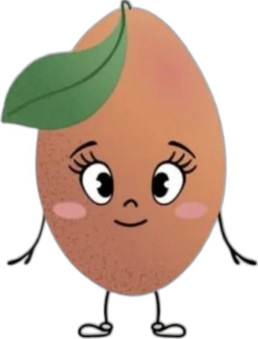
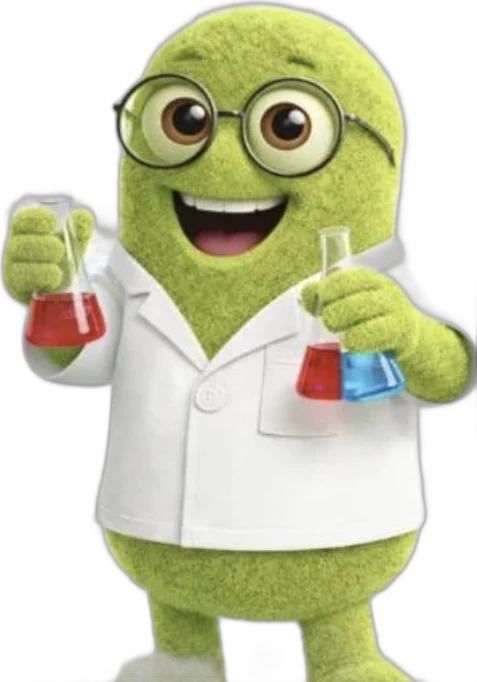
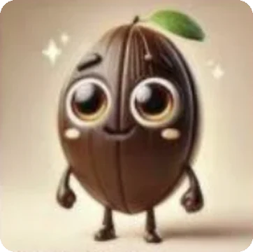
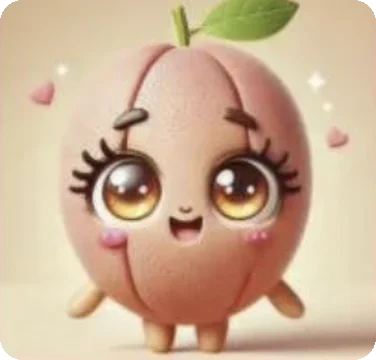
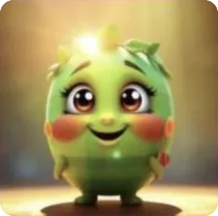
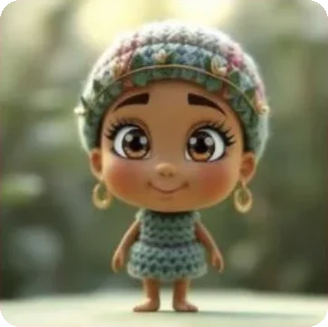
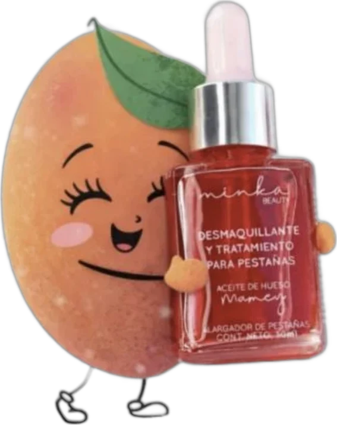
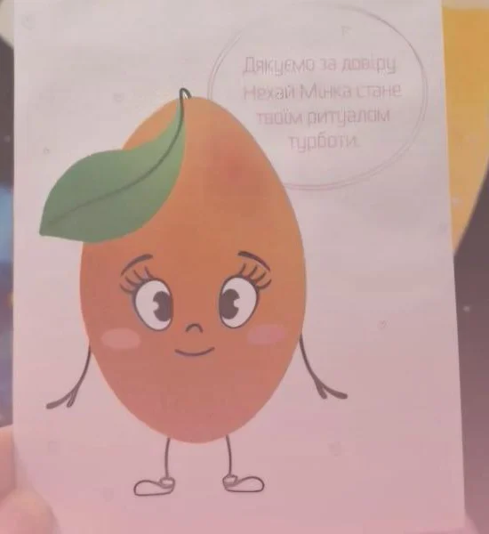
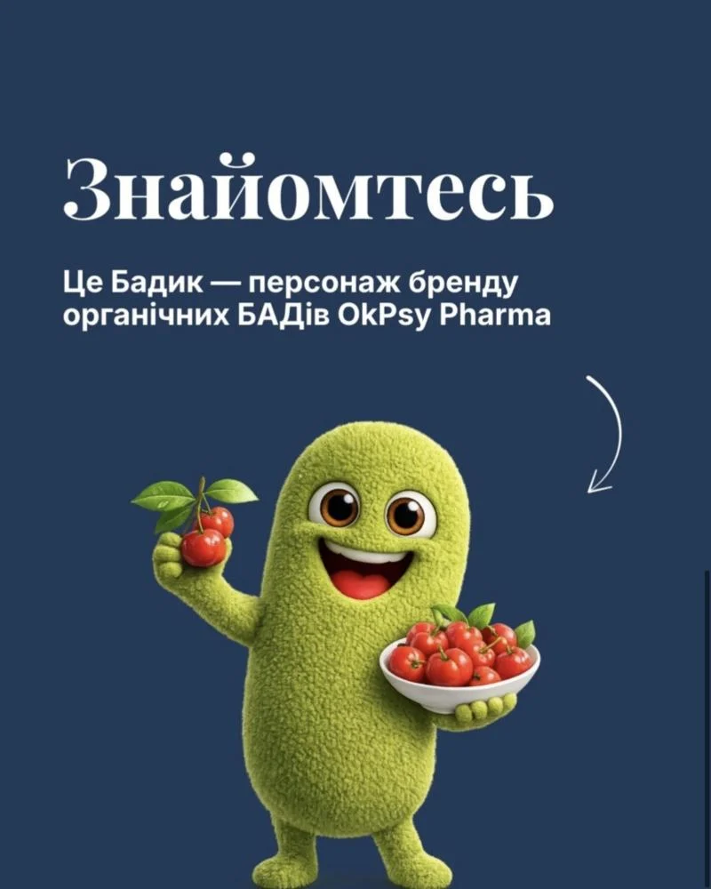
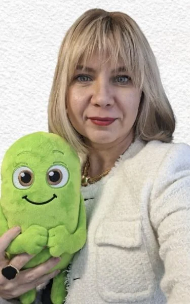

Люди не запам’ятовують бренди — вони запам’ятовують образи. Показуємо, як це працює на двох зовсім різних кейсах.
/чому маскот:
Чим частіше люди бачать персонажа, тим швидше вони:
- впізнають бренд
- згадують його
- починають довіряти
У нас було дві компанії в різних нішах, але з однією проблемою — не було того, що утримує увагу.


/кейс 1: Minka Beauty
Клієнт: мексиканський б’юті-бренд, який виходив в Україну з новим продуктом — олійкою для демакіяжу.
Задача: бренд з новим продуктом і низькою впізнаваністю в Україні.
Що ми зробили:
- Розробили кілька варіантів персонажа: фрукт мамей, з якого зроблена олійка, і дівчинка-мексиканка
- Обрали персонажа з продукту, бо він напряму пов’язаний із брендом, легко масштабується в контенті і швидше запам’ятовується





Результат: маскот вийшов за межі соцмереж — він з’явився на листівках, які бренд вкладає в замовлення клієнтам.

/кейс 2: OKPsy Pharma
Клієнт: український бренд органічних БАДів. Інша ніша, інший продукт, але той самий виклик.
Задача: пояснювати складні речі про БАДи просто і без відчуття «Вікіпедії».
Що ми зробили: створили Бадика — персонажа, який:
- спрощує складне
- додає емоцію
- робить бренд ближчим

Бадик може говорити, пояснювати і зніматися у відео. І для цього більше не потрібна студія анімації — бо тепер є AI.
Результат: маскот став м’якою іграшкою і живе вже не тільки в соцмережах.

Детальніше про стратегію і контент — у кейсі OKPsy Pharma.
/висновки:
Два різні бренди, але один результат: маскот підсилює бренд. Це короткий шлях від «хто це?» до «я їх знаю».
Якщо маскот створений зі стратегії — він працює. Якщо просто «бо прикольно» — ні.